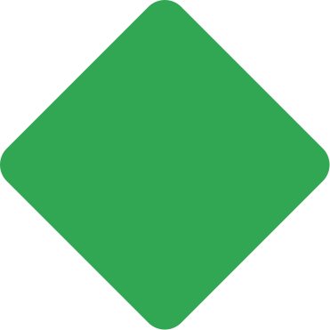
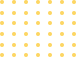

<link rel="import" href="chrome://resources/html/polymer.html">

<dom-module id="onboarding-background">
  <template>
    <style>
      :host {
        position: absolute;
        left: 0;
        right: 0;
        bottom: 0;
        top: 0;
        overflow: hidden;
        max-width: 1280px;
        margin: auto;
        z-index: -1;
      }

      /* The entire container is anchored at the center of the page, and each
         is positioned relative to the center. */
      #container {
        position: absolute;
        left: 50%;
        top: 50%;
      }

      img {
        position: absolute;
      }

      #blue-circle {
        right: 611px;
        bottom: 255px;
      }

      #yellow-dots {
        right: 397px;
        bottom: 194px;
      }

      #grey-rounded-rectangle {
        right: 573px;
        top: -43px;
      }

      #red-triangle {
        top: 187px;
        right: 405px;
      }

      #yellow-semicircle {
        bottom: 282px;
        left: 60px;
      }

      #green-rectangle {
        left: 483px;
        top: -77px;
      }

      #grey-oval {
        left: 420px;
        top: 130px;
        mix-blend-mode: multiply;
      }
    </style>
    <div id="container">
      
      
      
      
      
      
      
    </div>
  </template>
  <script src="onboarding_background.js"></script>
</dom-module>